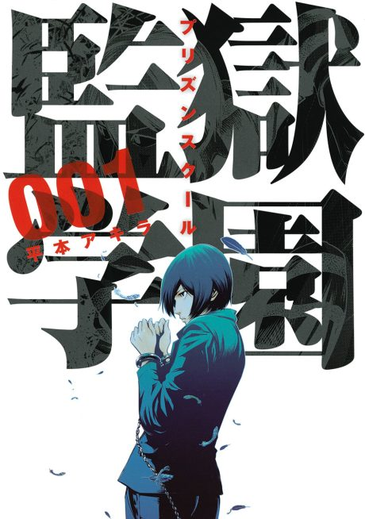
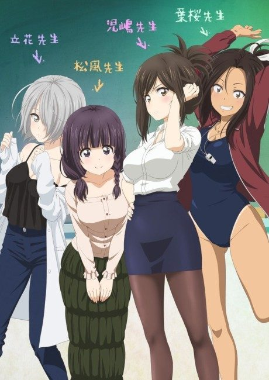
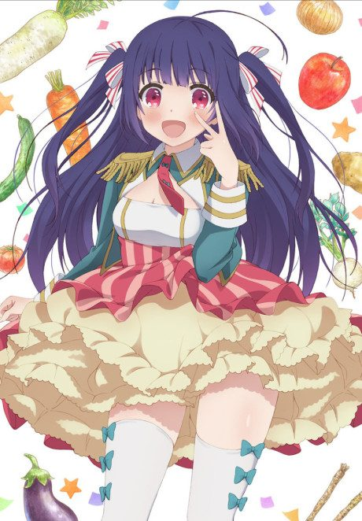

Prison School
監獄学園〈プリズンスクール〉
Five boys at a formerly all-girls school are caught peeping and locked in the school's prison by the shadow student council.
After the anime, read the manga from Chapter 82.
7.3AniList score
—Animeter, no votes yet
12episodes
Rate it or report where you stopped
Anime finished. Where does the manga pick up?
Start at Chapter82
The anime ends on chapter 81, so start at chapter 82 (volume 9, School Festival arc). The manga is finished at 279 chapters.
181279 end
Season 1Start reading here
More like Prison School
 Manga Ch. 368.0
Manga Ch. 368.0
 Manga Ch. 486.9
Manga Ch. 486.9
 Unclear6.7
Unclear6.7
 Original7.9
Original7.9
 Manga Ch. 3167.8
Manga Ch. 3167.8
 Manga Ch. 2907.6
Manga Ch. 2907.6
 Done7.3
Done7.3

Unclear6.2
Unclear6.4 Manga Ch. 257.6
Manga Ch. 257.6
 Film7.6
Film7.6
 Unclear6.1
Unclear6.1